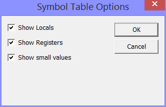

You reach the MMIX symbols options through the Options menu.
Even mid-sized MMIX programs contain large numbers of symbols, that can be shown in the symbol table window. To select which symbols you want to see here, there are three check boxes. Symbol table support is currently not yet perfect. But you can open a symbol table view and scroll any symbol into the edit window by clicking on it.
A simple heuristic is used to determine what is a local smbol: global symbols contain only a single colon as the first character. This first caracter is usually not shown.
If this box is checked, local symbols (containing more than one colon) are shown.
If this box is checked, symbols that name registers are shown.
Symbols are mainly used for code and data locations. Code locations are typically at #100 and above, data locations are typically above #2000 0000 0000 0000. Symbols that name small values are often not of interest; they are shown only if this box is checked.